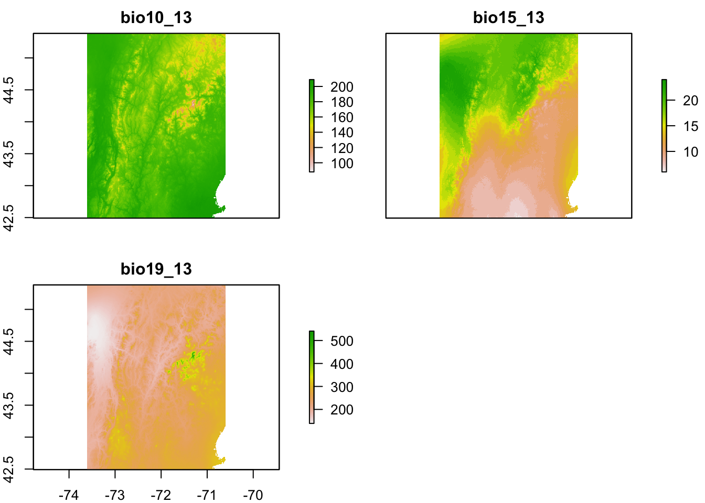
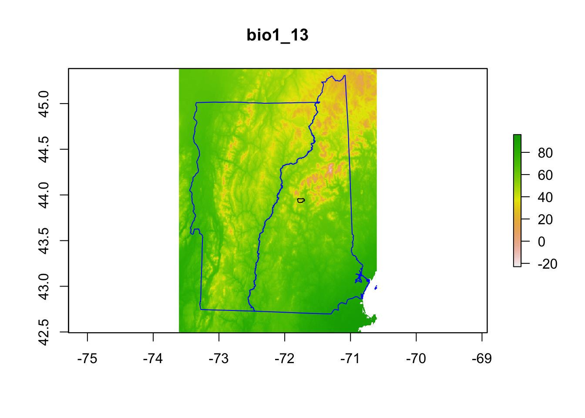
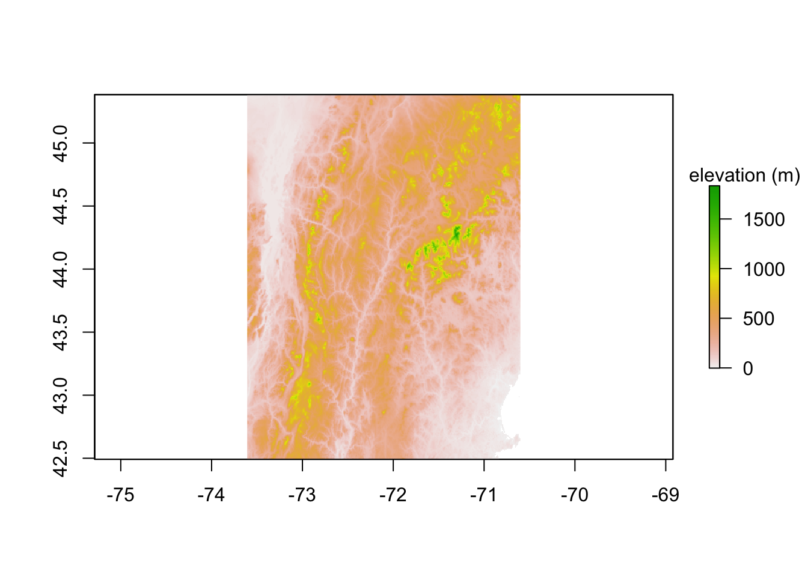
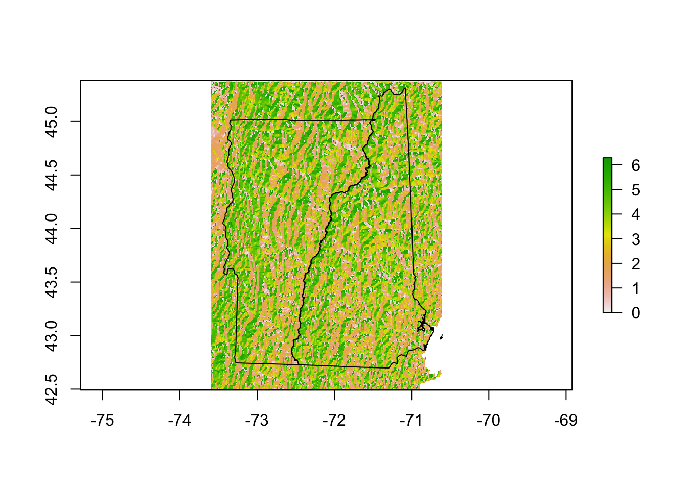
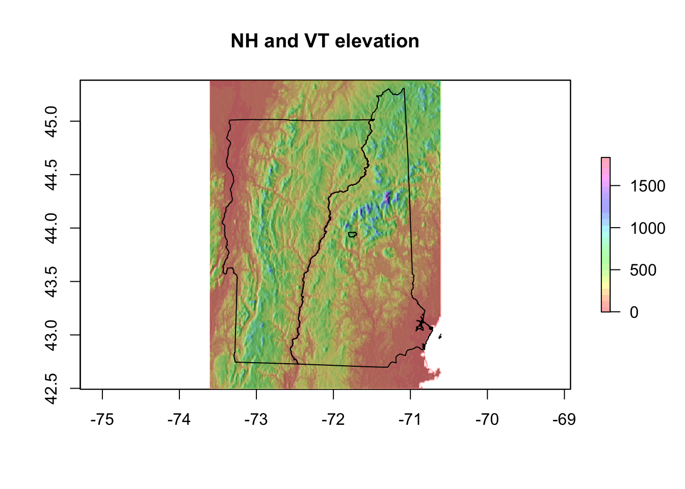
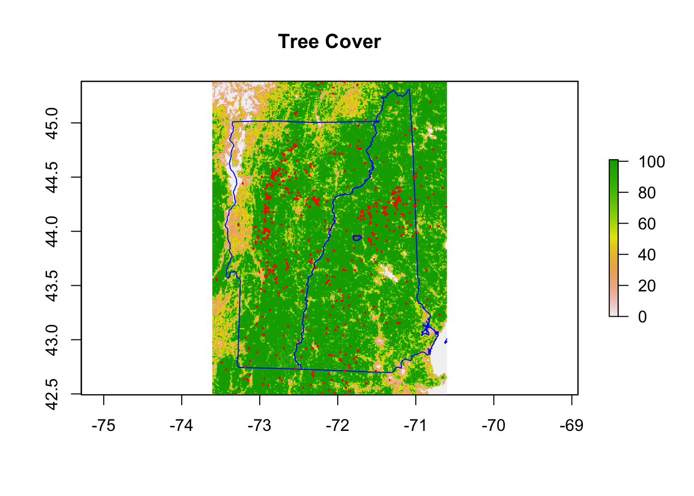
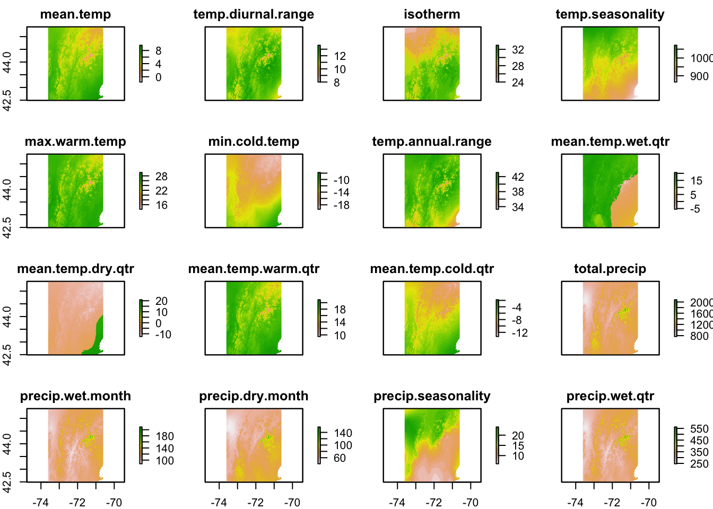

Chapter 4 Variables
I will download climate, landcover and elevation data to use as predictors.
4.1 Set-up
This chapter will use the following libraries. These must be loaded for the code in this chapter to work. I’ve used :: to clarify what functions are associated with what packages, but still the packages must be loaded to do any plotting.
I need to load in the shapefile data from Chapter 1.
I have found that when working with large raster layers that RStudio can sometimes get very slow. In that case a call to the “garbage collection” gc() function to clear out temporary memory can help. If it doesn’t then going to the Tools tab and restarting R will help. The latter will get rid of any variables in your working directory so make sure anything you need is saved.
4.2 Climatic data
I will use the getData function from the raster package to get climate data. I will retrieve global bioclimatic variables at 0.5’ (1km) resolution from WorldClim. This returns 19 bioclimatic variables. For the 0.5’ resolution, I need to give it a center longitude and latitude and then it returns data centered on that in a 30 degrees longitude and latitude box. This is 300+ Mb but it will check if the directory exists and won’t keep re downloading if you re-run the code. path tells it where to save the downloaded directory (which will be called wc0.5).
bioclimVars <- raster::getData(name = "worldclim", res = 0.5,
var = "bio", lon = mean(NHVT[1:2]), lat = mean(NHVT[3:4]),
path = "data")bioclimVars is a raster stack.
class(bioclimVars)A raster stack is collection of many raster layers with the same projection, spatial extent and resolution. I don’t know why _13 is appended to the bioclim names by getData().
class : Extent
xmin : -90
xmax : -60
ymin : 30
ymax : 60 [1] "bio1_13" "bio2_13" "bio3_13" "bio4_13" "bio5_13" "bio6_13"
[7] "bio7_13" "bio8_13" "bio9_13" "bio10_13" "bio11_13" "bio12_13"
[13] "bio13_13" "bio14_13" "bio15_13" "bio16_13" "bio17_13" "bio18_13"
[19] "bio19_13"4.2.1 Crop and subset
I will crop down this raster stack to the NH+VT bounding box.
Here I will plot just 3 of these variables.
- BIO10 = Mean Temperature of Warmest Quarter
- BIO15 = Precipitation Seasonality (how much precipitation varies during year)
- BIO19 = Precipitation of Coldest Quarter
Plot these three variables. This takes awhile. Note bio10_13 is mean temperature times 10. That’s how GBIF records temperature.

Another why to make this stack is to read in the data from the downloaded files in dir("wc0.5"). Downloaded in .bil format and comprised of two files.
Plot one layer.
onelayer <- raster::raster(fils[1])
plot(onelayer, xlim = NHVT[1:2], ylim = NHVT[3:4])
# Add the NH VT lines on top
plot(nhvtshp, add = TRUE, border = "blue")
plot(hbshp, add = TRUE)
title(names(onelayer)) You can create a stack from the file names and then crop to the NH+VT bounding box.
4.2.2 Bioclim names
I want to make a data frame to use to get the descriptions for the variables. I made this by looking at the WorldClim website. name is the name of the variable in the downloaded data, desc is a description, col is what I will call the column.
bioclimnames <- data.frame(name = paste0("bio", 1:19, "_13"),
desc = c("Mean annual temperature", "Mean diurnal range (mean of max temp - min temp)",
"Isothermality (bio2/bio7) (* 100)", "Temperature seasonality (standard deviation *100)",
"Max temperature of warmest month", "Min temperature of coldest month",
"Temperature annual range (bio5-bio6)", "Mean temperature of the wettest quarter",
"Mean temperature of driest quarter", "Mean temperature of warmest quarter",
"Mean temperature of coldest quarter", "Total (annual) precipitation",
"Precipitation of wettest month", "Precipitation of driest month",
"Precipitation seasonality (coefficient of variation)",
"Precipitation of wettest quarter", "Precipitation of driest quarter",
"Precipitation of warmest quarter", "Precipitation of coldest quarter"),
col = c("mean.temp", "temp.diurnal.range", "isotherm", "temp.seasonality",
"max.warm.temp", "min.cold.temp", "temp.annual.range",
"mean.temp.wet.qtr", "mean.temp.dry.qtr", "mean.temp.warm.qtr",
"mean.temp.cold.qtr", "total.precip", "precip.wet.month",
"precip.dry.month", "precip.seasonality", "precip.wet.qtr",
"precip.dry.qtr", "precip.warm.qtr", "precip.cold.qtr"),
stringsAsFactors = FALSE)Do some memory clean-up before moving on.
used (Mb) gc trigger (Mb) limit (Mb) max used (Mb)
Ncells 4212296 225.0 7809775 417.1 NA 7683111 410.4
Vcells 10724921 81.9 20676257 157.8 16384 20675251 157.84.3 Topographical data
I can read in elevation data with getData(). For USA, this returns a list of 4 raster layers. List 1 is mainland. Then I crop to my NHVT bounding box. I don’t need to re-download the data if I already have it. path is the folder where the downloaded data will be stored. mask=FALSE means don’t cut off the elevation data at the US-Canada border. The USAelevation object is about 80MB. That is not needed so you might not want to save that file.
dirPath <- "data/elevation"
if (!dir.exists(dirPath)) dir.create(dirPath)
if (!file.exists("data/NHVTelevation.grd")) {
USAelevation <- raster::getData("alt", country = "USA", path = "data/elevation",
mask = FALSE)
raster::writeRaster(USAelevation[[1]], filename = "data/USAelevation.grd",
overwrite = TRUE)
NHVT.elevation <- raster::crop(USAelevation[[1]], NHVT)
raster::writeRaster(NHVT.elevation, filename = "data/NHVTelevation.grd",
overwrite = TRUE)
} else {
NHVT.elevation <- raster::raster("data/NHVTelevation.grd")
}The plot of raw elevation is not so pretty. Later we will use the hillshade() function to make a nicer plot of elevation.

4.3.1 Slope and aspect
The terrain() function will return the slope and aspect from an elevation layer.
NHVT.slope <- raster::terrain(NHVT.elevation, opt = "slope")
NHVT.aspect <- raster::terrain(NHVT.elevation, opt = "aspect")Plot of aspect.

There is also a hillShade() function that makes a prettier elevation plot than the elevation data alone.
hill <- raster::hillShade(NHVT.slope, NHVT.aspect, 40, 270)
plot(hill, col = grey(0:100/100), legend = FALSE, main = "NH and VT elevation")
plot(NHVT.elevation, col = rainbow(25, alpha = 0.35), add = TRUE)
plot(nhvtshp, add = TRUE)
plot(hbshp, add = TRUE)
4.4 Land cover data
These data are downloaded from EarthEnv land cover data set with a function called getlandcover.R in the code folder.
fils <- paste0("data/landcover/lc_1km_", c(1:12, "dom"), ".tif")
# check if the files already exist, and if not, download
if (!all(file.exists(fils))) {
getlandcover(gisdir = "data/landcover", ext = NHVT)
}
NHVT.landcover <- raster::stack(fils)The names are cryptic. Fix that.
oldnames <- paste0("lc_1km_", c(1:12, "dom"))
newnames <- c("Mixed.Needleleaf.Trees", "Evergreen.Broadleaf.Trees",
"Deciduous.Broadleaf.Trees", "Mixed.Other.Trees", "Shrubs",
"Herbaceous", "Cultivated", "Flooded", "Urban", "Snow", "Barren",
"Water", "Dominant.Land.Cover")
names(NHVT.landcover)[match(names(NHVT.landcover), oldnames)] <- newnamesI want to make a layer for trees which are in layers 1 to 4.
for (i in 1:4) {
fil <- paste0("data/landcover/lc_1km_", i, ".tif")
r <- raster(fil)
if (i == 1)
rt <- r else rt <- r + rt
}
NHVT.Trees <- rt
names(NHVT.Trees) <- "Tree.Cover"Trillium undulatum is associated with tree cover.
plot(NHVT.Trees)
plot(nhvtshp, add = TRUE, border = "blue")
plot(hbshp, add = TRUE)
title("Tree Cover")
plot(subset(trillium, species == "Trillium undulatum"), pch = ".",
cex = 2, col = "red", add = TRUE)
plot(hbshp, add = TRUE, border = "blue")
4.5 Stack all variables
First, I will create a stack with all my variables.
4.6 Fix layer names
The names in allVars are annoying, so I’ll give it better names.
[1] "bio1_13" "bio2_13"
[3] "bio3_13" "bio4_13"
[5] "bio5_13" "bio6_13"
[7] "bio7_13" "bio8_13"
[9] "bio9_13" "bio10_13"
[11] "bio11_13" "bio12_13"
[13] "bio13_13" "bio14_13"
[15] "bio15_13" "bio16_13"
[17] "bio17_13" "bio18_13"
[19] "bio19_13" "USA1_alt"
[21] "slope" "aspect"
[23] "Mixed.Needleleaf.Trees" "Evergreen.Broadleaf.Trees"
[25] "Deciduous.Broadleaf.Trees" "Mixed.Other.Trees"
[27] "Shrubs" "Herbaceous"
[29] "Cultivated" "Flooded"
[31] "Urban" "Snow"
[33] "Barren" "Water"
[35] "Dominant.Land.Cover" "Tree.Cover" I will write code to assign the right names. That way I won’t risk giving the wrong names to columns.
4.7 Fix temperature in GBIF
The temperature returned by GBIF is temperature x 10 so I will fix that.
4.8 Save
Finally, I will save allVars the stack of raster layers to a file.
Plot. I use rf here because raster layers are associated with files on disk which need to be read. R Markdown doesn’t like reading from the temporary files sometimes. By using rf I direct it to use the data/allVars.grd file not a temporary file.
